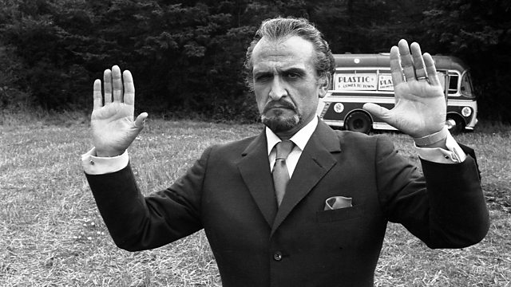

Master WHO?
O Mestre o inimigo/amigo mais antigo da serie junto com os Daleks
Iremos conhecer ele e suas regenerações
O Mestre Original

Este Mestre apareceu para ser um verdadeiro cavalheiro; suave, elegante, bem vestido, mas incrivelmente astuto e nunca teve medo de sujar as mãos. Seus esquemas nocivos tiveram sua cota de disfarces e hipnotismo, mas no fundo o que ele realmente queria era compartilhar um charuto e uma boa conversa com seu amigo mais antigo.
História mais importante: Terror of the Autons
O Mestre em Decomposição
Essa foi uma fase difícil para o Mestre! Por ter usado todas as suas regenerações naturais, ele se recusou a desistir da vida, mesmo quando seu corpo estava desmoronando e decadente. Este Mestre foi especialmente cheia de ódio e rancor, e estava absolutamente desesperado para encontrar um novo corpo ou para tentar fazer o seu próprio parar de cair.
História mais importante: The Deadly Assassin
O Mestre dos Disfarces
Esta encarnação do Mestre roubou o corpo do pai de Nissa, Tremas, e passou a aterrorizar a quarta, quinta, sexta e sétima encarnação do Doutor (assim como a Primeira, Segunda e Terceira no episódio The Five Doctors)!
Ele assumiu muitos disfarces diferentes durante o seu tempo, alguns piores que outros (nós estamos olhando para você, Sir Gilles Estram), e foi tão mal quanto as últimas encarnações.
História mais importante: Logopolis
O Mestre que Sobreviveu
Uma versão interessante do Mestre, foi executado pelos Daleks em Skaro por ser incrivelmente mal, e antes de sua morte pediu que suas cinzas fossem levadas de volta à Gallifrey pelo Doutor. Mas, é claro, o Mestre sempre encontra uma maneira de permanecer vivo. Sua consciência sobreviveu sob a forma de uma criatura em forma de cobra, que então assumiu o corpo de um americano motorista de ambulância, Bruce. Este corpo não durou muito tempo, mas em seu curto período foi tão chamativo, cruel e mal como nunca.
História mais importante: Doctor Who (1996)
O Mestre da Camuflagem

Esse Mestre passou quase toda a sua vida não sabendo que era o Mestre. Fugindo dos horrores da Guerra Tempo, disfarçou-se como uma criança humana e cresceu para se tornar o gentil Professor Yana. Este velho simpático e gentil estava disposto a sacrificar-se para que os últimos humanos sobreviventes podessem chegar a Utopia, mas essa benevolência não iria durar muito. Abrindo o misterioso relógio de bolso que estava com ele desde criança, assumiu sua verdadeira forma como o Mestre, matou seu assistente Chantho e trancou-se na TARDIS do Doutor. Com essas alterações de personalidade, esse foi bastante extremo…
História mais importante: Utopia
O Mestre da Loucura
A Guerra do Tempo deve realmente ter afetado o Mestre, porque esta encarnação é a mais desequilibrada que já houve (até Missy). Semelhante ao Décimo Doutor, ele é charmoso, carismático e anda por todos os lugares como um cachorro; mas, ao mesmo tempo, é cruel, sádico e mostra tendências psicopatas e sociopatas. E depois de sua regeneração, essa loucura foi para níveis ainda mais elevados.
História mais importante: Last of the Time Lords/The End of Time – Part 2
THE QUEEN OF EVIL
E assim, chegamos à mais recente encarnação do Mestre: Missy! Agora, se você pensou que o Mestre anterior era louco, você ainda não conheceu Missy. Hilariante, sádica e totalmente imprevisível, Missy é como um gato que brinca com sua presa antes de decidir se vai comê-lo. Se ela te pegar, certifique-se de dizer algo agradável, na esperança de que talvez possa encontrar algum pingo de bondade e o deixe ir (embora, com toda a honestidade, isso provavelmente nunca acontecerá e você está condenados, desculpe)…
História mais importante: Death in Heaven